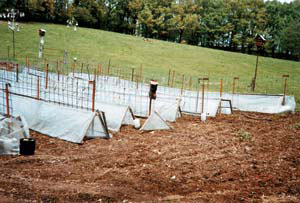
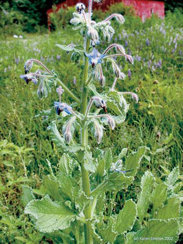
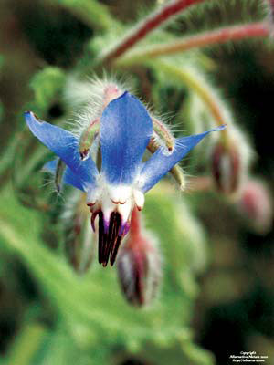

Build Better Tomato Protectors
Sow Beans for Summer Shade
Grow Borage for Bees
Great Reasons to Dry Your Laundry in the Sun
Easy Birdbath From an Old Satellite Dish
Make Your Own Pest-repelling Mulch
For the past 15 years, my wife, Edna, and I have lived on a 40-acre farm in the foothills of the Ozarks, in a little Missouri town with the Osage name of Neosho. Each year, starting in January, I receive lots of seed catalogs in the mail; my favorite is Tomato Growers Supply Co. They have a great selection of tomatoes, and each year I try three new varieties. My favorites so far are ‘Jetsetter,’ a large, early and prolific red tomato, and the hybrid ‘Big Beef’ that also is prolific and very solid with a wonderful flavor. I start the seeds in my woodstove-heated garage under grow lights.
My farm neighbors and I compete each year to see who can have the first ripe tomatoes. In order to beat the freeze and get my tomato plants in the ground early, I built a set of panels to shelter the plants (see photo). Each plastic-covered panel is 30 inches high by 15 feet long. It took 10 panels to cover both sides of the rows that contained 55 tomato plants.
In the past, I have used plastic jugs to cover each individual plant, but this was not always successful. For example, last spring we had a hard freeze after the tomatoes were planted - the plants covered by plastic jugs succumbed, but the ones protected by the panels all survived.
Joe White
Neosho, Missouri
To create a shady spot in the garden and make picking our green beans easier, we bent a 4-by-16-foot metal-mesh cattle panel (available at farm supply stores) into an arch over the path between raised beds. We anchored the panel to the ground with stakes so the wind wouldn’t blow it over and then planted pole beans at each end of the panel to make a green bean archway.
To shade the house during the hottest months, we planted purple hyacinth beans. We nailed strings to the eaves every couple of feet, making sure they were long enough to reach the ground. Then we planted the beans, one or two per string. Some of the seeds did not germinate, but because the vines spread so well, this was not a problem.
When the plants were about a foot tall, we loosely tied the string to the base of the plant and twisted the vine around the string. The vines grew all summer long and into the fall. It made a beautiful sunscreen that the hummingbirds also liked.
Tim, Trina and Phillip Peiffer
English, Indiana
Borage, a cucumber-flavored herb (see photo gallery), is a great addition to your kitchen garden. The plant’s bright blue flowers attract lots of bees, which will help pollinate your crops. Borage reseeds vigorously, so you can leave seedlings in the garden where you want them and pull the rest.
Some people use borage as a tea or in salads. My plants serve clouds of bees all summer long, even some leafcutter bees.
Bees will not hurt you on purpose; they are too busy to pay much attention to you.
Jeffrey Dickemann
Richmond, California
Unlike most of our city cousins, many of us country-minded folk still practice the art of hanging our just-washed laundry on clotheslines to dry.
Why do this when a clothes dryer is available? One reason is the lovely fresh scent that lingers on the sheets and the clothes. All the fabric softeners in the world can’t create the sweet smell that sheets carry after they have been blowing in the breeze all day.
Clothesline drying allows the sun to bleach the whites with its ultraviolet rays, while also killing some bacteria. Using no commercial bleaches is great, especially because the majority of us residing in the country are on septic systems and shouldn’t use bleach.
Hanging clothes on a line instead of using a dryer is more economical, as well. Do you ever wonder where all that dryer lint originates? From your clothes, of course! Dryers wear out clothes faster than the more “old-fashioned” method of line drying.
I find it therapeutic to spend time outside attaching a basketful of clothes to the line. The peaceful sounds surround me while I exercise - leaning over to pick up an item, stretching to pin it to the line and removing the clothes when they are dry.
If the clothes feel a bit stiff or wrinkly when they’re dry, you can always stick them in the dryer for a few minutes. Very little electricity or gas is used for this touch up, and it solves the problem of stiff or wrinkly laundry.
Marti French
Highlands Ranch, Colorado
In my quest to reuse miscellaneous items that no longer function as intended, I have discovered a creative use for my old 2-foot-diameter TV satellite dish - a birdbath.
I attached the dish to the top rail of my chain-link fence with a hose clamp, using the existing holes in the satellite dish. Presto, an instant birdbath! I can fill it with water or let the rain or snow do the job for me.
Rebecca Lee
High Rolls, New Mexico
In the eternal war of gardener versus slugs and bugs, my arsenal of sprays and poisons is a bit scary. During the annual trimming of various cedars, junipers and arborvitae trees, I hit on the idea of using those branches for mulch to discourage the pests, rather than using pesticides.
Instead of sending the branches to the landfill, I just ran them through a chipper/shredder and put the wonderful-smelling chips around strawberries, pumpkins, squash and other plants that pests love so much.
The pests are repelled by the smell, as are moths that won’t go after clothes in a cedar chest or fleas that avoid a dog lying on a cedar-chip mattress.
Warren Johnson
Smithfield, Utah
Have you learned some trick of the trade, secret formula or way to work more sustainably around the homestead? We’ll pay you $25 to $50 for each letter we publish. Send info, with photos please, to “Country Lore” at Mother Earth News; 1503 SW 42nd St.; Topeka, KS 66609, or to letters@MotherEarthNews.com.
|
 Joe White Homemade tomato protectors |
 Karen Shelton/Alternative Nature Herbals Borage, a cucumber-flavored herb, is a great addition to your garden. |
 Karen Shelton/Alternative Nature Herbals The bright blue flowers of borage will attract bees to your garden or yard. |